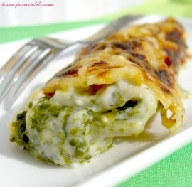

Cannellonis ricotta épinards
Ingrédients
4×
- 12 cannellonis ou feuilles de lasagnes
- 1 gousse d'ail
- 1 oignon
- 500 g d'épinards hachés
- 250 g de ricotta
- béchamel (50cl de lait)
- 50 g de gruyère râpé
- 50 g de parmesan
- 3 courgettes râpées
- 1 bûche de chèvre sans croûte
- 1 petit pot de pesto

Préparation
Étape 1
Précuire 12 cannellonis ou feuilles de lasagnes 5min dans l’eau bouillante, 3 par 3.
Étape 2
Hacher 1 gousse d'ail et 1 oignon, les rissoler puis ajouter 500 g d'épinards hachés. Une fois cuits, ajouter 250 g de ricotta, saler et poivrer.
Étape 3
Préparer la béchamel (50cl de lait) et en napper finement le fond d’un plat à gratin.
Étape 4
Farcir les cannellonis et les ranger dans le plat.
Étape 5
Napper du reste de béchamel, parsemer de 50 g de gruyère râpé et éventuellement de 50 g de parmesan. Cuire 30min à 200ºC, puis quelques minutes sous le gril pour dorer.
Conseils
- Variante : remplacer épinards et ricotta par 3 courgettes râpées, 1 bûche de chèvre sans croûte et 1 petit pot de pesto.
Résumé
12 cannellonis ou feuilles de lasagnes
Précuire
1 gousse d'ail
1 oignon
500 g d'épinards hachés
250 g de ricotta
Hacher rissoler
béchamel (50cl de lait)
Préparer
Farcir
50 g de gruyère râpé
50 g de parmesan
Cuire 200ºC gril